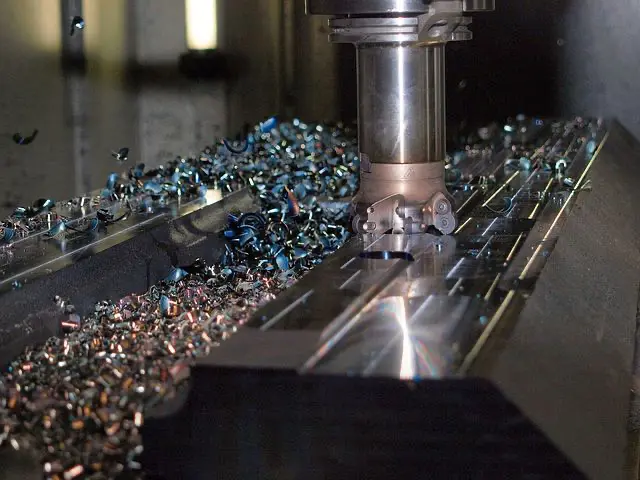

Employee Ownership Trusts
Plan and deliver the move to employee ownership: feasibility, valuation, funding from future profits, trust governance and completion.
2 EOTs establishedEmployee Ownership Trust Specialist & Part-Time Finance Director
Helping ambitious SMEs move to employee ownership, navigate growth, and make better decisions. Based in Yorkshire, working UK-wide.
About
A practical thinker who enjoys problem solving and making a difference.
After a 20-year career as Finance and Operations Director with a complex, £850m motor retail group, Phil chose a portfolio career helping businesses and their owners grow and adapt. Specialising in employee ownership, Phil has guided SME owners through the move to an Employee Ownership Trust — a route to succession that rewards the people who built the business.
Specialist Service
An EOT lets you sell your business to the people who helped build it, without handing it to a competitor or a private equity buyer. Since 26 November 2025 the tax picture has changed, and the price is still paid out of future profits — so the real question is whether your business can actually afford to buy itself. That's a financial modelling question, and it's the one I answer first.
For disposals on or after 26 November 2025, half the gain is relieved and half is held over into the trustees' base cost — an effective rate of around 12%. It is no longer tax-free, and any adviser still telling you it is has not read the rules.
Step back on your own timetable. No trade buyer, no auction, no disruptive due diligence — and the business stays independent.
Employees gain a real stake in the company's future and can receive an annual bonus of up to £3,600 each free of income tax.
Most of the price is paid out of trading profits over time. I model it properly, so the deal doesn't quietly starve the business it depends on.
The first question isn't how — it's whether an EOT is right for you at all. I'll give you a straight answer, then guide you through valuation, funding, governance and completion.
Services
From employee ownership to strategic planning, I provide the expertise you need without the full-time cost.
Plan and deliver the move to employee ownership: feasibility, valuation, funding from future profits, trust governance and completion.
2 EOTs establishedSenior financial leadership on a flexible basis, typically one to three days a week. Board-level experience without the full-time cost.
11 active clientsModel and re-model business strategies and their financial sensitivities to support confident decision making.
Introduce systems for measuring lead and lag indicators. Build valuable reporting that answers: what's the score?
Support acquisitions and sales with thorough financial due diligence and deal preparation.
6 deals supportedClarify expectations, develop your finance team's capabilities, and ensure the basics are completed efficiently.
Track Record
Client Portfolio
Delivering employee ownership and financial leadership for businesses with £2m to £20m+ turnover

.webp)

Community
Beyond business, I'm committed to supporting the next generation. As a Mosaic Mentor, I participate in programmes that create opportunities for young people in our most deprived communities, boosting confidence, self-efficacy and long-term employability.
Frequently Asked Questions
An Employee Ownership Trust is a trust that holds shares in a company for the benefit of all its employees. Rather than selling to a competitor or private equity, an owner sells a controlling interest to the trust, and the business carries on with its culture, people and independence intact. It is a well-established route to succession, introduced by the Finance Act 2014 and used by employee-owned businesses across the UK.
The main conditions are that the company is a trading company (or the principal company of a trading group), that the trust acquires and keeps a controlling interest of more than 50% of the shares, and that the trust benefits all eligible employees on the same terms. There are also limits on the proportion of employees who are also substantial shareholders, and the trustees must be UK resident. Unlike some share schemes, there is no cap on company size or employee numbers.
This changed at the Autumn Budget 2025 and a lot of published advice is now out of date. Selling to an EOT used to be completely free of Capital Gains Tax. For disposals on or after 26 November 2025, relief is cut to 50%: half the gain is chargeable now, and the other half is held over and deducted from the trustees' acquisition cost, so it comes back into charge on a future disposal by the trust. Business Asset Disposal Relief and Investors' Relief cannot be claimed where EOT relief is claimed. The effective rate is roughly 12%. The company can still pay employees an annual bonus of up to £3,600 each free of income tax (National Insurance still applies). The conditions must keep being met after completion, and relief can be clawed back from the seller if they are broken.
The trust rarely has cash of its own, so the purchase price is usually paid over time out of the company's future trading profits as deferred consideration, sometimes alongside an upfront payment or third-party lending. This is the part most owners underestimate. Building a realistic funding model, and being honest about how long payment will take, is the difference between an EOT that works and one that strangles the business.
A typical EOT transition takes around three to six months from feasibility to completion, covering valuation, funding structure, trust and governance setup, legal documentation, and employee communication. The timeline depends heavily on how ready the business is to run without the departing owner.
Phil Southern has established 2 Employee Ownership Trusts for client businesses, and advises owners considering employee ownership as a succession route. His client experience spans businesses from £2m to £20m turnover across manufacturing, distribution, professional services and recruitment.
No. An EOT suits a profitable, stable business with a management team capable of running it once the owner steps back, and an owner who is content to be paid out of future profits rather than taking cash up front from a trade buyer. If the profits will not support the purchase price, or there is no succession team, an EOT is the wrong answer and it is better to know that early.
A part-time Finance Director (also known as a fractional CFO) provides senior financial leadership to businesses on a flexible basis, typically 1-3 days per week. This gives SMEs access to experienced financial expertise - including employee ownership, business planning, and financial control - without the cost of a full-time hire.
Results Driven is based in Yorkshire and works with SMEs across the United Kingdom. I regularly work with businesses in Leeds, Bradford, Sheffield, Harrogate, York, Wakefield, and throughout Yorkshire, as well as clients across the rest of the UK.
Get in Touch
Whether you're considering employee ownership, planning your succession, or need strategic financial guidance, I'd love to hear about your challenges.